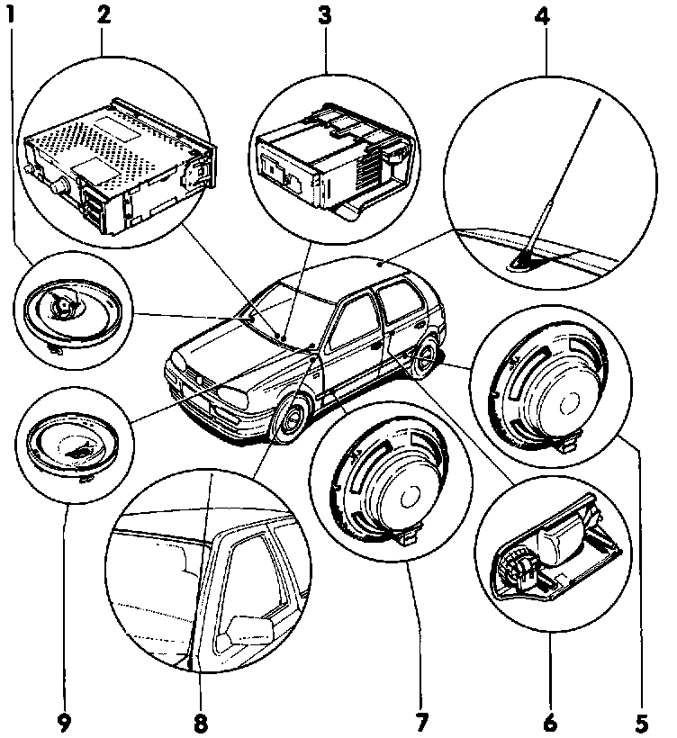

Radio, Stereo, and Compact Disc: Locations
Radio System (Deluxe, Premium & Sound System) Component Layout
CAUTION: Before working on the electrical system:
- Obtain radio anti-theft Code.
- Ignition OFF!
- Disconnect battery Ground (GND) strap.
Note: After reconnecting battery:
- Activate vehicle vehicle equipment such as radio, clock and power windows.
- On vehicles equipped with OBD II, activate readiness code.

1- Right front tweeter -R22-
- Dome tweeter
- Diameter: 100 mm (3.9 in.)
- Mounted on base in instrument panel
2- Stereo radio (Deluxe and Premium)
- Installed in instrument panel
3- Cassette storage (where applicable)
- Installed in front of center console
4- Roof-mounted antenna, amplified
- Installed on certain models only; replaces telescoping antenna -8-
5- Left rear woofer -R15-
- Diameter: 168 mm (6.6 in.)
- Right rear woofer -R17- is identical
- In rear parcel shelf
6- Left rear tweeter -R14-
- Dome tweeter
- Connected to rear base speaker
- Right rear tweeter -R16- is identical
- In rear parcel shelf;
7- Left front woofer -R21-
- Diameter: 168 mm (6.6 in.)
- In front door panel
- Right front woofer -R23- is identical
8- Telescoping antenna -R11-
- Installed on certain models only, where roof-mounted antenna -4- is not used
9- Left front tweeter -R20-
- Dome tweeter
- Diameter: 100 mm (3.9 in.)
- Mounted on base in instrument panel